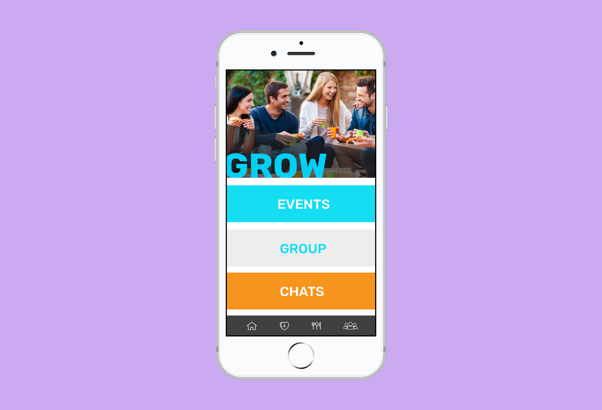

FitNU
Overview
Fall 2018 | 2 Months | NEU Go-to-healthy-sources
FitNU is a free app designed for NEU students. Associated with the on-campus clubs, it serves as the go-to source for all things health and fitness and focuses on helping students to increase their physical and mental health.
It is broken down into three categories - EAT, MOVE, GROW.
01. Colors
02. App Interfaces
Menu
Home

1st Category:
EAT

Receipts are divided into breakfast, lunch, dinner, dessert and offers specific dietary needs.

It offers a list of restaurants with menus and maps.


2nd Category:
MOVE

I. Personal

Workouts share tips, circuits that users can "like" and save them.
My Schedule creates schedules that include both academic and Marino classes.

II. Group
Activities shows all upcoming on-campus and off-campus activitiess associated with FitNU.
Marino Classes access to signup and pay for classes with weekly schedule.
Motivation offers blogs sharing personal stories and promoting a healthy lifestyle.
3rd Category:
GROW

Events show on-campus events for both mental and physical health.
Groups provide a list of club sports and calendar of recent health-related activities.

Chats allow users to create personal or group chats. It can also be accessed on homepage.

03. Posters